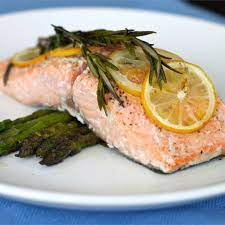

Salmon

Description
This is the perfect romantic dinner for two when served with an Oregon Pinot Noir, crusty bread, wild rice, and salad.
Per Serving: 257 calories; protein 20.5g; carbohydrates 6.1g; fat 18g; cholesterol 56.4mg; sodium 1016.7mg.
Ingridients
- 1 lemon, thinly sliced
- 4 sprigs fresh rosemary
- 2 salmon fillets, bones and skin removed
- coarse salt to taste
- 1 tablespoon olive oil, or as needed
Steps
- Preheat oven to 400 degrees F (200 degrees C).
- Arrange half the lemon slices in a single layer in a baking dish. Layer with 2 sprigs rosemary, and top with salmon fillets. Sprinkle salmon with salt, layer with remaining rosemary sprigs, and top with remaining lemon slices. Drizzle with olive oil.
- Bake 20 minutes in the preheated oven, or until fish is easily flaked with a fork.